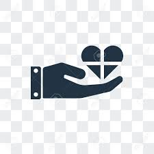

Clickbait
Sensationele koppen die overdrijven of beloven wat het artikel niet waarmaakt, puur om klikken te genereren.
Een diepgaande uitleg over soorten, oorzaken en gevolgen.
Nepnieuws (ook wel 'misinformatie' of 'desinformatie' genoemd) verwijst naar valse of misleidende informatie die wordt gepresenteerd als betrouwbaar nieuws. Het verschil tussen misinformatie en desinformatie is belangrijk: misinformatie wordt per ongeluk verspreid zonder kwade opzet, terwijl desinformatie bewust wordt gecreëerd om te misleiden.
Sensationele koppen die overdrijven of beloven wat het artikel niet waarmaakt, puur om klikken te genereren.
Nieuws dat bewust wordt vervormd om een politiek of ideologisch standpunt te bevorderen.
Nep-nieuws bedoeld als humor of kritiek, maar dat soms als echt wordt beschouwd.
AI-gegenereerde video's of foto's waarbij iemands gezicht of stem wordt vervangen door iemand anders.
Echte foto's of video's die worden geplaatst in een verkeerde context om een vals verhaal te vertellen.
Verzonnen of uit context gehaalde cijfers en statistieken die een vals beeld schetsen.

Nepnieuws kan verkiezingen beïnvloeden en het vertrouwen in democratie ondermijnen.

Tijdens COVID-19 stierven mensen doordat ze nepnieuws geloofden over gevaarlijke 'geneesmiddelen'.

Nepnieuws vergroot polarisatie en wantrouwen tussen bevolkingsgroepen.
In mei 2020 verscheen een video genaamd Plandemic op sociale media. De video bevatte een interview met een voormalig wetenschapper die ongefundeerde claims maakte over COVID-19 en vaccins. Binnen enkele dagen was de video meer dan 8 miljoen keer bekeken. Platforms als YouTube, Facebook en Vimeo verwijderden de video wegens het verspreiden van gevaarlijke medische desinformatie. Dit voorbeeld toont hoe snel nepnieuws zich verspreidt en hoe moeilijk het is te stoppen.
Na een vermeende chemische aanval in Douma, Syrië, circuleerden online tientallen tegenstrijdige verhalen. Sommige beweerden dat de aanval nep was of geënsceneerd. Onderzoeksjournalisten van Bellingcat wisten via open-source intelligence (foto's, video's, satellietbeelden) te bewijzen dat de aanval echt had plaatsgevonden. Dit voorbeeld laat zien hoe nepnieuws ook in oorlogssituaties levens kan kosten.